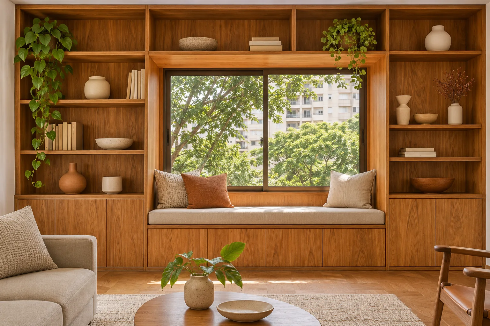

Cozinhas
Divisões e alturas pensadas para o que você usa todos os dias.
Marcenaria sob medida para usar melhor seu espaço. Você mostra o ambiente e a gente conversa sobre medidas, materiais e acabamentos.
Apresentar meu projeto
Divisões e alturas pensadas para o que você usa todos os dias.
Nichos, portas e painéis integrados às medidas da parede.
Guarda-roupas e bancadas planejados para a sua rotina.
O ambiente, a largura e o acabamento desejado ajudam a entender a primeira ideia.
Simulação concluída. Nenhum pedido foi enviado.